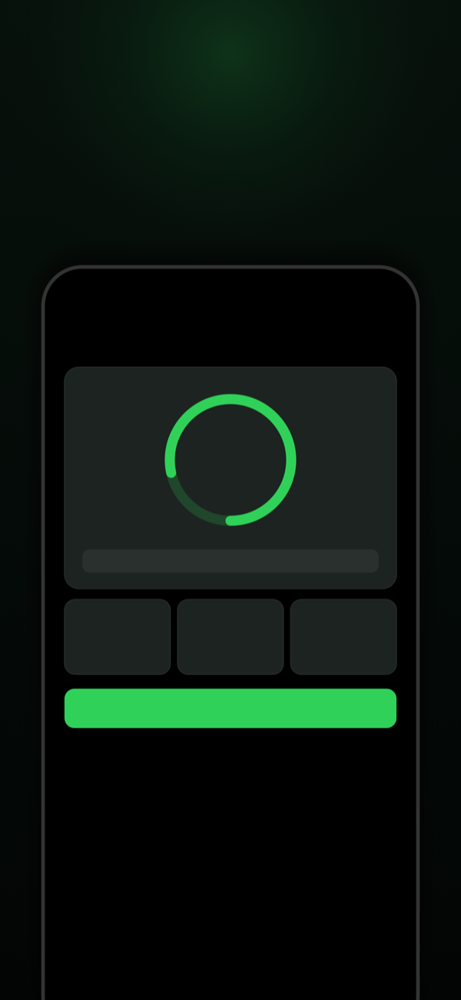
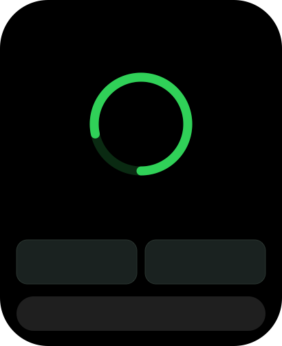
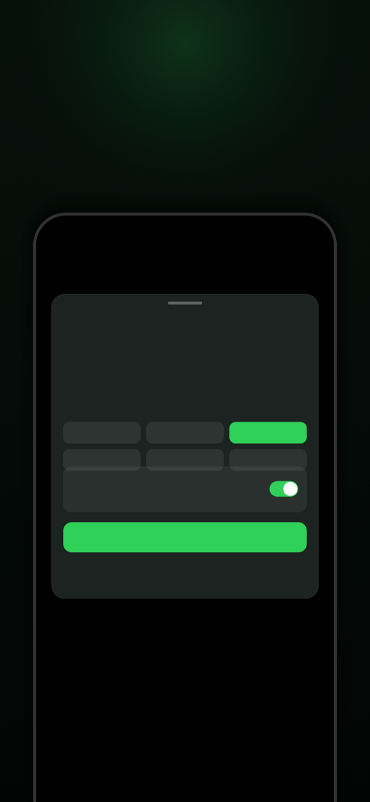
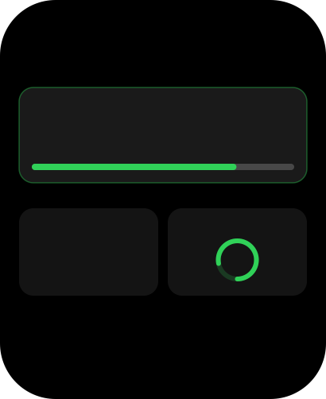

Dein täglicher Schrittzähler.
Klar. Elegant. Privat.
Erreiche deine täglichen Bewegungsziele mit flüssigen Fortschrittsringen, 7-Tage-Historie und Zifferblatt-Komplikationen für deine Apple Watch – 100 % werbefrei und ohne Abo.


Einblicke in Schrittweise
Schlank, auf das Wesentliche reduziert und nahtlos in dein Apple-Ökosystem eingebettet.
Dein Tag auf einen Blick
Ein dynamischer Farbverlaufsring visualisiert deinen Tagesfortschritt. Sieh sofort, wie viele Schritte du bereits geschafft hast und wie nah du deinem Ziel bist.
- Flüssiger Aktivitätsring: Sanft animierter Kreisring mit Mint-Cyan-Farbverlauf.
- Distanz & Kalorien: Automatische Berechnung von Kilometern und aktiven Kalorien.
- Restschritte-Rechner: Zeigt exakt die noch fehlenden Schritte zum Tagesziel an.
Die 7-Tage-Historie
Verfolge deine Bewegungsroutine über die gesamte Woche. Ein klares Balkendiagramm zeigt deine tägliche Aktivität im Vergleich zu deinem Ziel.
- Tagesbalken mit Zielmarke: Schnelle Übersicht mit gestrichelter Ziellinie.
- Erreichte Ziele: Tage mit erreichtem Ziel werden leuchtend grün hervorgehoben.
- Wochendurchschnitt: Ermittelt deinen durchschnittlichen Schrittwert pro Tag.
Ziel anpassen & smarte Motivation
Passe dein Schrittziel mit Schnellauswahl-Buttons oder per Stepper millimetergenau an deinen Alltag an. Optionale Mitteilungen feiern deine Meilensteine.
- Schnell-Voreinstellungen: 5k, 8k, 10k, 12k, 15k oder 20k Schritte mit einem Fingertipp.
- Feinabstimmung: Über die Stepper-Tasten in flexiblen 500er-Schritten justierbar.
- Motivierende Meilensteine: Push-Nachrichten bei 25%, 50%, 75%, 90% und beim Zielerfolg.

Apple Watch & Komplikationen
Schrittweise wurde von Grund auf für die Apple Watch optimiert. Sieh deine Schritte sofort auf deinem Lieblings-Zifferblatt, ohne dein iPhone aus der Tasche holen zu müssen.
- Eigenständige Watch-App: Übersichtlicher Ring, Distanz, Kalorien und Zieländerung per Schieberegler.
- 3 Zifferblatt-Designs: Wähle zwischen „Schritte & Fortschritt“, „Nur Schritte (Groß)“ oder „Verbleibende Schritte“.
- Akkuschonende Hintergrund-Updates: Liest direkt aus HealthKit und dem geschützten App-Group-Speicher.

Warum Schrittweise?
Ehrliche Software ohne Schnickschnack, die sich nahtlos in dein Leben einfügt.
100% Datenschutz
Deine Gesundheitsdaten gehören nur dir. Sämtliche Daten bleiben verschlüsselt auf deinen Apple-Geräten. Kein Tracking, keine Analyse-Tools, keine Server.
Ohne Abo & Werbung
Keine störenden Banner-Werbungen, keine Pop-ups und keine versteckten monatlichen Abonnements. Konzentriere dich ungestört auf deine Bewegung.
Batterieschonend
Optimiert für maximale Akkulaufzeit auf iPhone und Apple Watch. Nutzt die integrierten energiesparenden Bewegungssensoren von Apple Health.